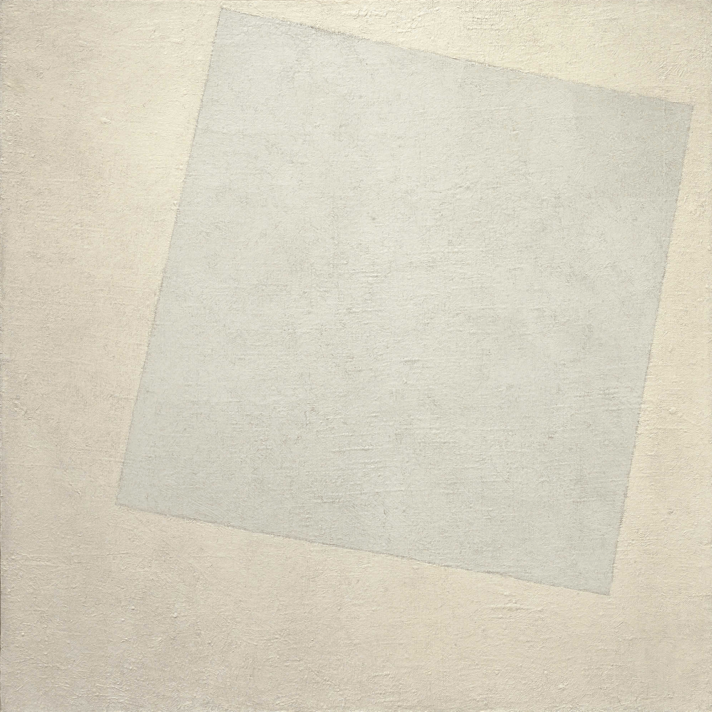

I love avant-garde art from the early 20th century. Especially from Eastern Europe and Germany - constructivism, bauhaus, and etc. In particular, I very much like art by Kazimierz Malewicz (Казими́р Севери́нович Мале́вич) and El Lissitzky. Their art was like cutting away the cancer of the old world and starting a new better world. A sort of tabula rasa of white canvas with a white square in the middle. They could do it then indeed as it was the revolutionary time, society was reshaping itself. Nowadays the world is not revolutionary, painting over the old would be rather escapist.
I was thinking recently about suprematism (an art movement started by Malewicz) that is described in Wikipedia as
"the supremacy of pure artistic feeling" rather than on visual depiction of objects.
(First I will start by saying that I am not educated in fine arts, I haven't studied art by Malewicz and others, so these are just my random thoughts.)
Fair enough, the first part of this paragraph describes it rather clearly, but what about the second part? What does it mean to go away from the visual depiction of an object in visual art like painting or photography? His art is also described as not representational (so abstract) and non-objective (as in there are no objects). I don't think that this is possible unless we say that "abstract" objects like squares are not objects, but they are indeed based on real objects, they are approximations of a square window or a cube of sugar.
Then I thought well, Malewicz was not writing in English, he was from a Polish-Belarussian family, born in Kyiv, Ukraine, lived later in Russia, and collaborated with people from Germany and France. He wrote in Polish, Russian, German, and perhaps in other languages (I am not sure). So what were his direct words in this regard? Let's start with the name of Malevich's pamphlet
Die gegenstandslose Welt
The word 'gegenstandslose' has a couple of meanings, it can mean irrelevant, pointless, without subject, or non-objective but 'gegenstand' means also resistance. Word 'Welt' means the world. I think it's far more layered and poetic than simply non-objective art. In this pamphlet, we can read
seufzte die Kritik und mit ihr die Gesellschaft: Alles, was wir geliebt haben, ist verloren gegangen: Wir sind in einer Wüste ... Vor uns steht ein schwarzes Quadrat auf weißem Grund! [..] Das schwarze Quadrat auf dem weißen Feld war die erste Ausdrucksform der gegenstandslosen Empfindung: das Quadrat = die Empfindung, das weiße Feld = das Nichts außerhalb dieser Empfindung.
the critics and the society sighed: everything we loved has been lost: we are in a desert ... In front of us is a black square on a white background! [..] The black square on the white field was the first form of expression of non-objective sensation: the square = the sensation, the white field = the nothing outside of this sensation.”
"Everything we loved has been lost: we are in a desert" this sounds like an expression of desperation, the old world is lost, and I think it's fitting with the word Gengenstandslos.
Another thing I get from this quote is that it's the sensation that is non-objective, not the painting itself. The sensation of course is subjective and thus it's not objective. It's beautifully twisted, the sensation is not an object and it's not objective as well. I think that this is the way to get art that is not of object and non-objective. So we get a private Malevich's sensation, impossible to access for us, we are outside, in the desert.
White on white, Malevich

El Lissitzky